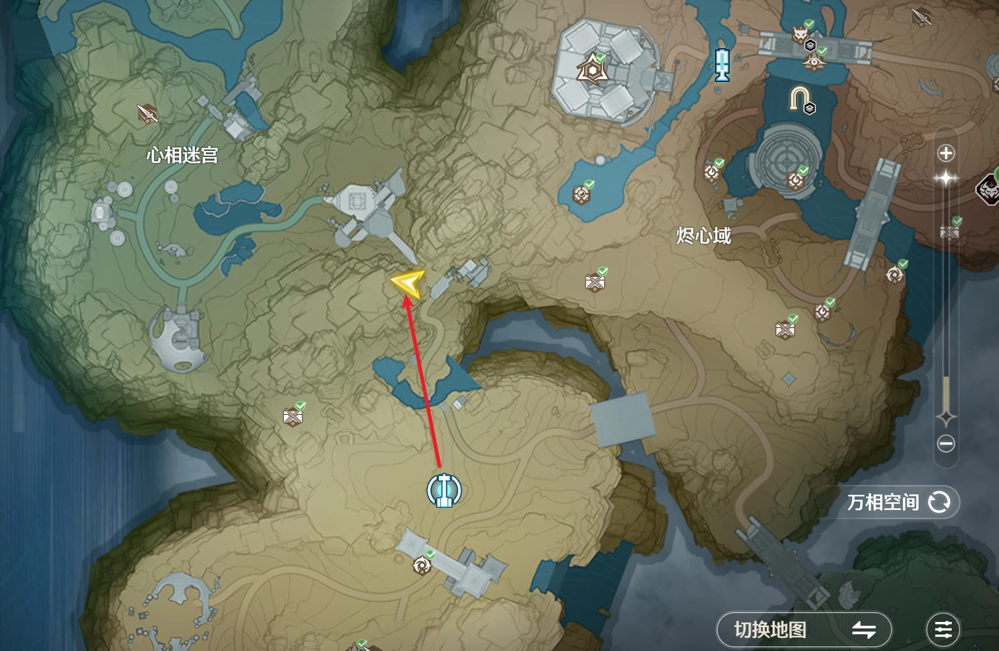

成就 · 探索点位
缚影璇玑位置
成就「哎！哎！生气了？」所需攻击目标 · 心相迷宫东侧
心相迷宫区域东侧（与烬心域交界处）· 黄色三角标记 · 白色平台建筑旁

成就信息
- 成就名称
- 哎！哎！生气了？
- 条目
- 缚影璇玑位置
- 位置说明
- 缚影璇玑位于心相迷宫区域东侧、与烬心域交界处。截图红色箭头指向的黄色三角标记处，紧邻一座白色平台建筑。
- 获取方式
- 攻击缚影璇玑（心相迷宫东侧三角标记处）
- 操作提示
- 传送到心相迷宫区域后向东侧（烬心域方向）移动，在白色平台建筑旁的黄色三角标记处即可找到缚影璇玑，直接攻击即可触发成就进度。
- 收录日期
- 2026-10-12